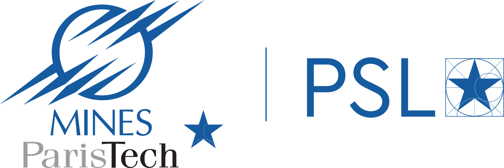
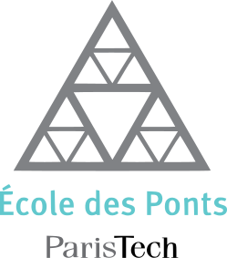

I am currently a postdoctoral researcher at the Autonomous Space Robotics Lab (ASRL), University of Toronto Institute for Aerospace Studies. I received my Ph.D. from Mines ParisTech - Université PSL (France), and prior to that my M.Sc.Eng. from l'École Des Ponts ParisTech (France).
My research focuses on deep learning, 3D point clouds and robotics. I have developed a novel convolutional operator for 3D point clouds, KPConv, and designed deep network architectures for 3D object classification, object part segmentation, semantic scene parsing. I have also explored the problems of rotation invariance and equivariance in 3D convolutions, and adapted a rotation-invariant version of KPConv. Recently I have been interested in the application of deep neural networks to robotics applications. In particular I study how a robot can use its own past experiences to learn meaningful undertanding of its current environment, via self-supervision. If you are interested in my projects, feel free to visit the different github pages of my projects, or contact me directly.

Ph.D. 3D Computer Vision (2016-2019)
Mines Paristech, Université PSL, France
Advisors: François Goulette, Beatriz Marcotegui, Jean-Emmanuel Deschaud.
Thesis: Learning New Representations for 3D Point Cloud Semantic Segmentation.
During my Ph.D., I studied handcrafted features and developed a novel multiscale spherical neighborhood definition to compute
features describing 3D points. Using conclusions drawn from handcrafted representations, I designed a point convolution
operator: KPConv. It uses radius neighborhoods and a set of kernel points to play the role of the kernel pixels
in image convolution. This design offers a straightforward deformable extension and very strong performances
(ranked first in many benchmarks). I also studied the learnt representations to compare with handcrafted features.
M.Sc. M2 Master MVA (2015-2016)
ENS Paris-Saclay, France
During the last year of my master, I specialized in computer vision and machine learning
in the top French M.Sc. MVA (Mathematiques, Vison, Apprentissage)

M.Sc.Eng. Applied Mathematics (2015-2016)
École Des Ponts ParisTech, France
In this top French engineering school, I majored in mathematics and computer sciences.